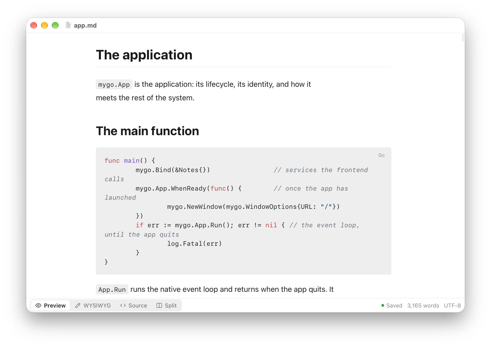

一个文件，一个窗口
双击打开，拖入也行。没有文件树、笔记库或标签页，只有眼前这份文档。
轻量的桌面 Markdown 编辑器
像打开一张图片一样，打开你的 Markdown。
轻松阅读，随手编辑，用完即走。
macOS Windows Linux

约 7 MB 的 macOS 安装包
无需账号，没有遥测
免费开源，Apache-2.0
认真对待你的原文
空行、列表符号、表格对齐、换行符，都是文档的一部分。修改一处，保存时只重写那一块，其余原样保留。
只是打开看看？文件一个字节都不会变。
经过 260 多份真实文档的保真回归验证# A little weekend plan * coffee with friends* a book, a quiet afternoon Let's meet on Friday.Let's meet on Saturday. [café]: https://example.com只写回改动的这一块，其余保持原样。
从阅读到写作
看一眼文档，改几行文字，或仔细打磨源码。
切换方式，阅读位置依然在。
# Room for a thought
A small file. A little clarity.
## Today sounds good
- [x] Open a Markdown file
- [x] Make yourself at home
- [ ] Write something worth keepingA small file. A little clarity.
默认以预览打开，专注阅读。按 ⌘E 或双击正文，随时开始编辑。
留给文档多一点空间。
把日常需要的细节，安静地做好。
双击打开，拖入也行。没有文件树、笔记库或标签页，只有眼前这份文档。
已有文件自动保存，意外退出后恢复内容。其他程序改了文件？会先问你保留哪一版。
表格、任务列表、代码高亮、数学公式、Mermaid 图、脚注和 GitHub 提示块。
导出 HTML、PDF，或直接打印。查找替换、文档大纲、深浅主题，也都准备好了。
macOS 13 Ventura 及以上
Apple silicon.dmg Intel.dmg已签名并通过 Apple 公证
Windows 10 及以上，x64
下载安装程序.exe无需管理员权限。首次安装遇到 SmartScreen 提示，选择「更多信息 → 仍要运行」。
x64 / arm64，尽力支持
选择安装包↗提供 .deb、.rpm 和 .tar.gz
请按发行版与架构选择。
LiteMd 仍处于早期阶段，重要文档请做好备份或放在版本控制中。